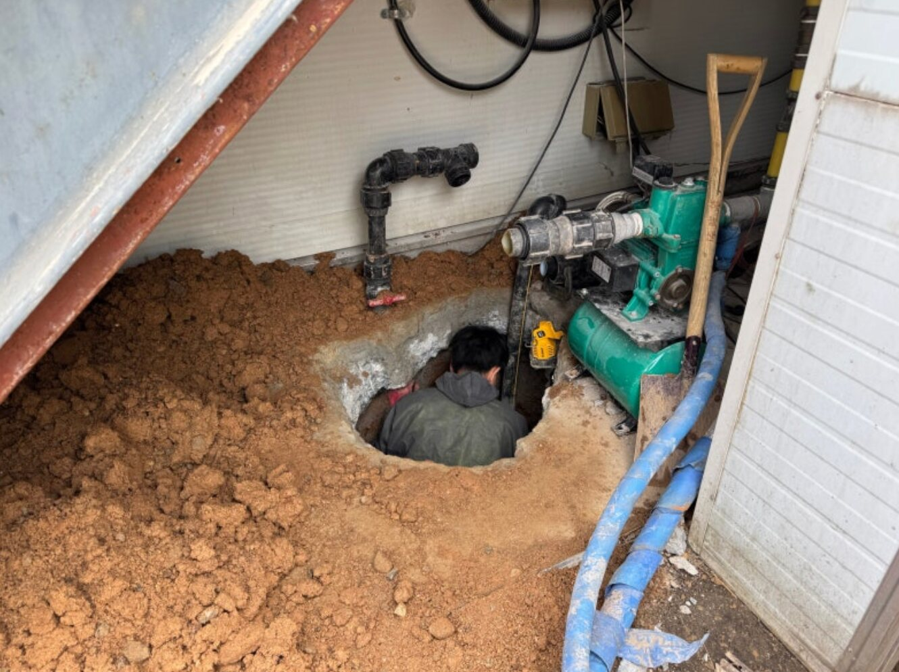
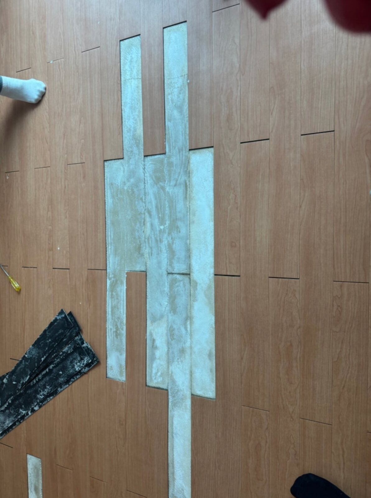
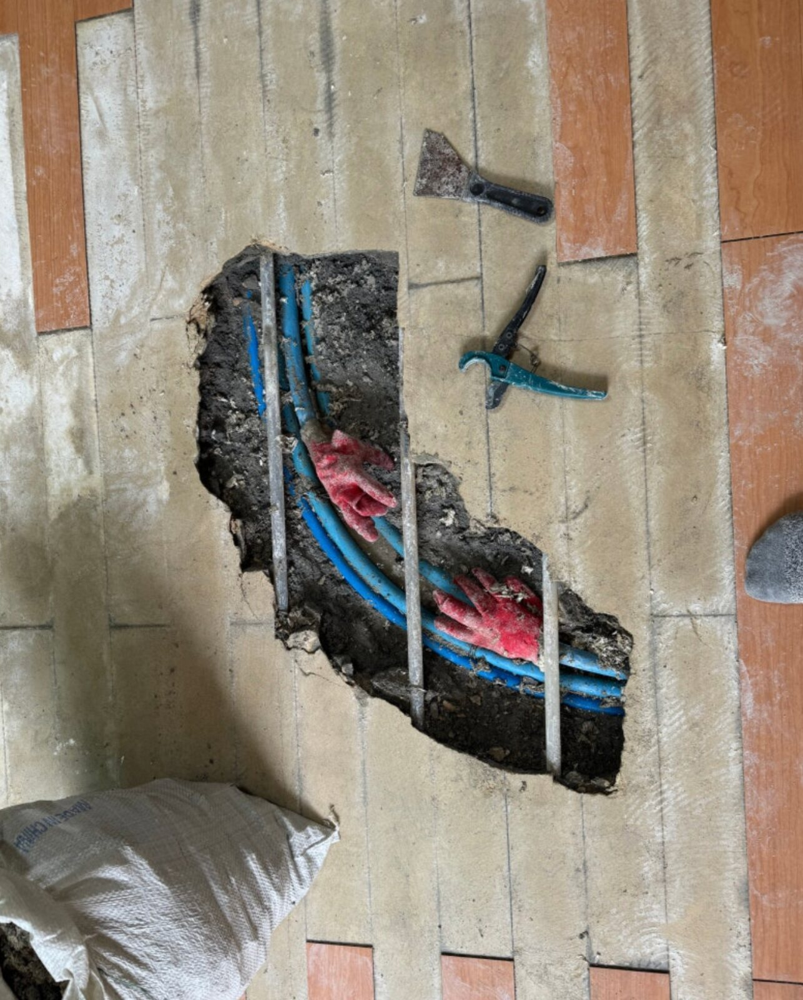
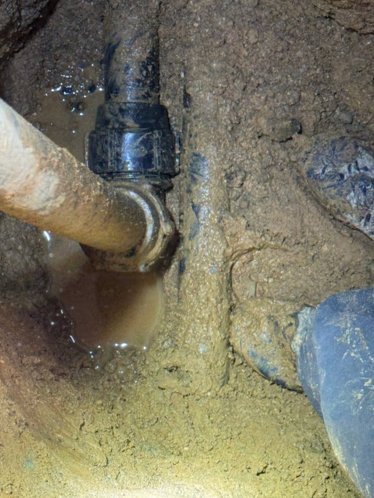

천장·벽에 물자국이 생겼어요
젖은 자국이나 곰팡이가 반복된다면 위층·벽체 내부 배관 등 원인을 확인해야 합니다.

오우케이누수탐지 · 배관 보수 전문
천장과 벽에 번지는 물자국부터 계량기 이상, 공장 배관 누수까지. 증상과 현장을 먼저 살피고 누수 원인과 필요한 작업을 안내합니다.
LEAK CARE
겉으로 드러난 물자국만 보고 판단하기 어려운 누수는 배관과 주변 상태를 함께 살펴야 합니다.
젖은 자국이나 곰팡이가 반복된다면 위층·벽체 내부 배관 등 원인을 확인해야 합니다.
수도 사용을 멈춘 상태에서도 계량기 움직임이 계속되는지 확인해 누수 가능성을 살펴봅니다.
배관 위치와 누수 범위를 확인하고 현장 여건에 맞춰 탐지·굴착·보수 범위를 안내합니다.
HOW WE WORK
작업 범위를 먼저 설명하고, 현장 조건과 누수 위치에 맞춰 순서대로 진행합니다.
누수 위치와 발생 시기, 물 사용과의 관계를 확인합니다.
주택·상가·공장 등 현장 유형과 배관 상태를 살펴봅니다.
필요한 검사와 보수 범위, 별도 복구 여부를 설명하고 견적을 안내합니다.
합의된 범위에 따라 보수하고 작업 후 누수 여부를 다시 확인합니다.
증상과 배관 조건을 확인한 뒤 공압검사 등 필요한 점검 방법을 안내합니다. 검사만 필요한 경우와 보수·마감 복구가 필요한 경우를 구분해 설명드립니다.
FIELD RECORD
이전 작업에서 촬영한 기숙사와 공장 배관 누수 현장 사진입니다.
바닥 마감에 나타난 누수 흔적을 살펴 의심 구간을 좁히고, 필요한 범위를 열어 배관 상태를 확인한 뒤 보수했습니다.


공장 수도배관의 누수 구간을 확인하고 약 2m 깊이까지 굴착해 배관 연결부의 누수 지점을 찾아 보수했습니다.

ESTIMATE GUIDE
누수 위치와 배관 상태, 개방·복구 범위에 따라 견적이 달라질 수 있습니다. 검사와 보수, 마감 복구 비용은 구분해 설명드립니다.
표시된 금액은 상담 기준입니다. 누수 위치, 작업 여건, 부가세 및 마감 복구 포함 여부를 확인한 뒤 최종 견적을 안내합니다.
현장 조건으로 견적 문의 ↗PHOTO CONSULTATION
카카오톡 채널에서 현장 지역과 증상을 알려주시고, 가능하면 사진도 함께 보내주세요.
문의 내용과 사진은 카카오톡 채널 채팅창에서 보내주세요. 홈페이지에서 고객 정보를 입력받지 않습니다.
카카오톡 채널 상담하기 ↗전화 상담 010-3666-8255FAQ
사진은 증상을 파악하는 데 도움이 됩니다. 누수 위치와 작업 범위를 확인한 뒤 최종 견적을 안내합니다.
가능합니다. 배관 구조와 작업 여건이 현장마다 달라 현장 확인 후 별도 견적을 안내합니다.
개방·배관 보수와 타일·도장 등 마감 복구는 범위가 다를 수 있습니다. 상담 시 포함 여부를 먼저 확인해 주세요.
CONTACT
현장 유형과 증상을 확인해 필요한 점검과 보수 방법을 안내드립니다.